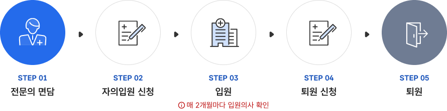
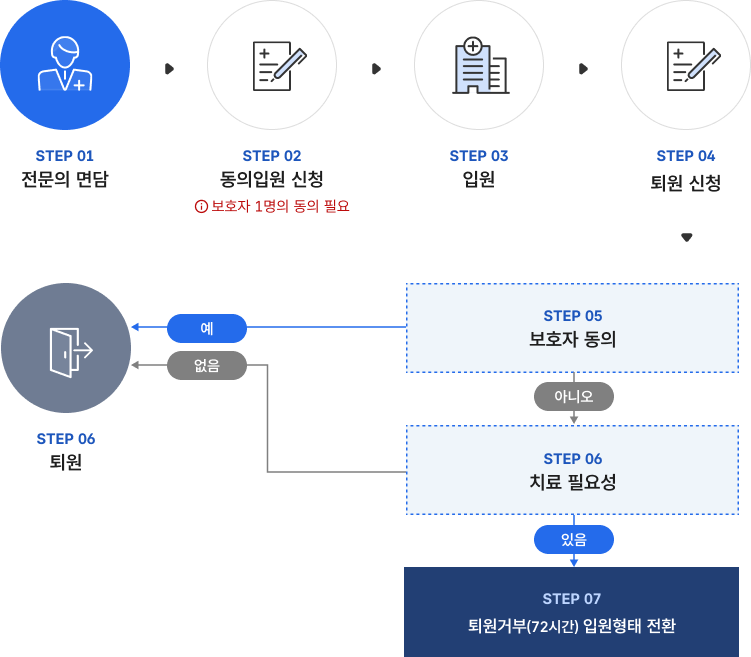
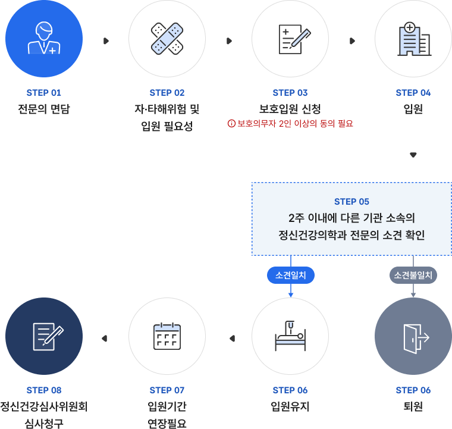
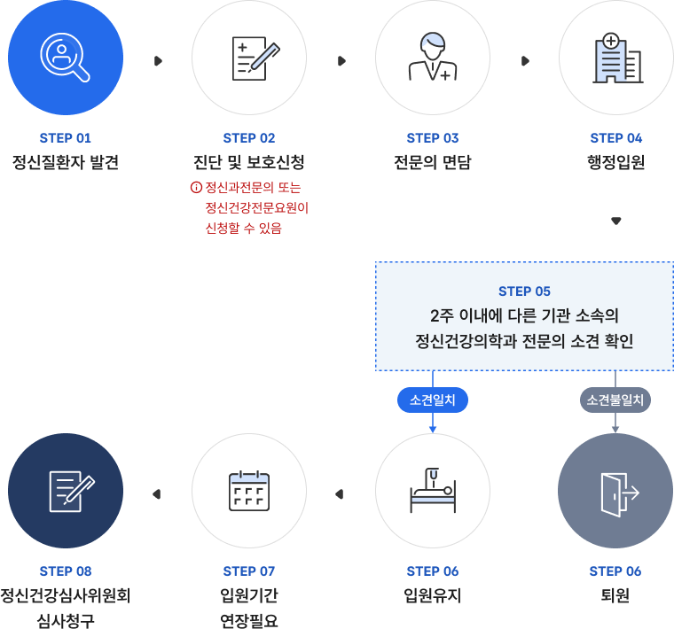
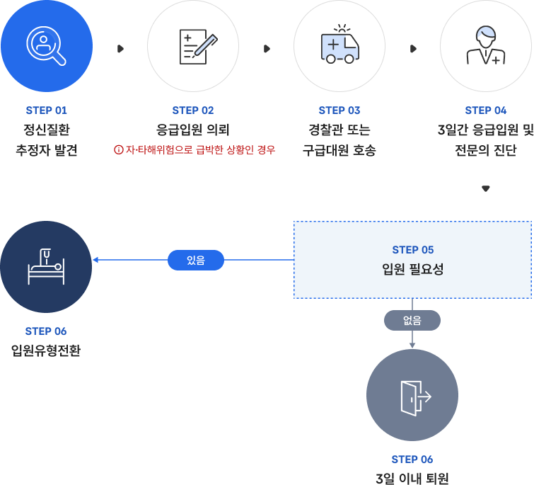

정신질환자 또는 정신건강상 문제가 있는 사람이 전문의의 면담 후 스스로 신청하여 입원하는 유형

자의입원 절차도
step 01 - 전문의 면담
step 02 - 자의입원 신청
step 03 - 입원 (매 2개월마다 입원의사 확인)
step 04 - 퇴원 신청
step 05 - 퇴원
동의입원
정신질환자가 전문의와 면담 후 보호의무자의 동의를 받아 입원하는 유형

동의입원 절차도
step 01 - 전문의 면담
step 02 - 동의입원 신청(보호자 1명의 동의 필요)
step 03 - 입원
step 04 - 퇴원 신청
step 05 - 보호자 동의
보호자 동의 '예'인 경우 - step 06 퇴원
보호자 동의 '아니오'인 경우 - step 06 치료필요성
치료필요성 없음 - step 06 퇴원
치료필요성 있음 - step 07 퇴원거부(72시간) 입원형태 전환
입원
환자와 보호의무자가 방문하여 전문의와 면담 후 입원 권고를 받으면 보호의무자 1인의 동의를 받아 환자가 입원을 신청
퇴원
환자 본인이 퇴원을 신청하고 보호의무자가 동의하는 경우 바로 퇴원가능하고 계속적인 치료가 필요하다고 판단되고 보호의무자가 퇴원에 동의하지 않는 경우 다른 유형의 입원으로 전환될 수 있음 ※ 정신의료기관에서는 2개월 마다 퇴원의사를 확인
보호입원
정신질환과 자·타해 위험이 있어 전문의와 면담 후 입원치료가 필요할 경우 보호의무자 2명 이상의 동의를 받아 입원하는 유형

보호입원 절차도
step 01 - 전문의 면담
step 02 - 자·타해위험 및 입원 필요성
step 03 - 보호입원 신청 (보호의무자 2인 이상의 동의 필요)
step 04 - 입원
step 05 - 2주 이내에 다른 기관 소속의 정신건강의학과 전문의 소견 확인
소견 불일치 할 경우 : step 06 - 퇴원
소견 일치 할 경우 :
step 06 - 입원유지
step 07 - 입원기간 연장필요
step 08 - 정신건강심사위원회 심사청구
입원
환자와 보호의무자가 방문하여 전문의와 면담 후 입원 권고를 받으면 보호의무자 2인의 동의를 받아 보호입원 진행
퇴원
입원기간 중 정신질환자 및 보호의무자는 퇴원을 신청할 수 있음. 다만, 정신질환으로 자·타해 위험이 있는 경우 72시간내에 퇴원을 거부할 수 있음.
입원유지 및 입원연장
입원 후 입원일로부터 2주 이내에 다른 정신의료기관 소속의 전문의 소견을 추가로 받아야 2주 이상 입원유지 ※ 정신의료기관에서는 2명의 전문의 소견이 일치하지 않으면 2주 이내에 퇴원해야 되며 최초 입원기간은 3개월이며 입원기간을 연장할 필요가 있을때는 정신건강심사위원회의 심사가 필요
행정입원
정신질환으로 자·타해 위험이 있다고 의심되는 사람을 발견하였을 때 특별자치시장·특별자치도지사·시장·군수·구청장에 의해 입원하는 유형

행정입원 절차도
step 01 : 정신질환자 발견
step 02 : 진단 및 보호신청 (정신과전문의 또는 정신건강전문요원이 신청할 수 있음)
진단의뢰
step 03 : 전문의 면담
입원 의뢰 (입원필요시)
step 04 : 행정입원
step 05 : 2주 내 2명의 정신건강의학과 전문의 소견 확인
소견 일치 할 경우
step 06 : 입원유지
step 07 : 입원기간 연장필요
step 08 : 정신건강심사위원회 심사청구
소견 불일치 할 경우 - step 06 : 퇴원
입원
정신건강전문요원이나 전문의 등이 특별자치시장·특별자치도지사·시장·군수·구청장에게 정신질환으로 인한 자·타해 위험이 있는 자에 대한 진단과 및 보호신청을 할 수 있음.
※ 경찰관은 진단 및 보호신청을 요청할 수 있음.
정신건강의학과 전문의로부터 입원이 필요하다는 진단을 받은 경우 특별자치시장·특별자치도지사·시장·군수·구청장은 지정의료기관에 입원을 의뢰
퇴원
정신건강의학과 전문의의 진단결과 입원의 필요성이 없으면 지정 정신의료기관장은 입원을 의뢰한 지자체장에게 입원 해제를 권고하여 환자를 최초 입원일로부터 2주 이내에 퇴원시킴
입원유지 및 입원연장
입원 후 입원일로부터 2주 이내에 정신건강의학과 전문의 소견을 추가로 받고 소견이 일치할 경우 2주 이상 입원유지 ※ 2명의 전문의 소견이 일치하지 않을 경우 2주이내에 퇴원
최초 입원 기간은 3개월이며 입원 기간을 연장할 필요가 있을 때는 정신건강심사위원회의 심사 필요
응급입원
정신질환자로 추정되며 자·타해 위험이 큰 사람을 발견한 사람이 의사·경찰관의 동의를 받아 정신의료기관에 입원시키는 유형

응급입원 절차도
step 01 : 정신질환 추정자 발견
step 02 : 응급입원 의뢰 (자 · 타해위험으로 급박한 상황인 경우)
step 03 : 경찰관 또는 구급대원 호송
step 04 : 3일간 응급입원 및 전문의 진단
step 05 : 입원 필요성 확인
입원 필요성 있을 경우 - step 06 : 입원유형전환
입원 필요성 없을 경우 - step 06 : 3일 이내 퇴원
입원
정신질환자로 추정되며 자·타해 위험이 큰 사람을 발견한 사람이 의사와 경찰관에게 동의를 받아 응급입원의뢰 가능
※ 응급입원에 동의한 경찰 또는 구급대원은 정신의료기관에 대상자를 호송
정신의료기관장은 응급 입원이 의뢰된 환자를 3일이내의 기간동안 입원
퇴원
정신건강의학과 전문의의 진단결과 계속입원의 필요성이 없다고 판단되면 정신의료 관의 장은 응급입원한 사람을 즉시 퇴원시킴.
입원유지 및 입원연장
정신건강의학과 전문의의 진단결과 자·타해 위험이 있는 정신질환자로서 계속입원이 필요한 경우 정신의료기관의 장은 계속하여 입원할 수 있도록 조치함.